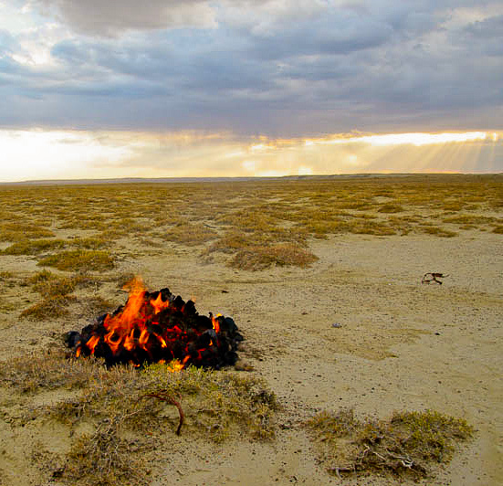

Comment faire du feu dans la steppe ?
Voila déjà pas mal de temps que nous avons abandonné notre réchaud et en constatant la nature du paysage du Kazakhstan, on peut se dire que les missions pour allumer un feu suffisamment persistant pour faire cuire une popote de riz risquent de s’avérer difficiles.
Eh bien pas tant que ça. Jusqu’aux premières neiges, il est assez facile de récolter des bouses et crottins de bétails desséchés par le soleil. Ce combustible un peu inattendu s’enflamme très bien et génère des braises qui, bien que fragiles ( il ne faut pas les secouer avec un tisonnier trop violemment sous peine de les voir s’effriter et devenir inutilisables ), suffisent à faire bouillir de l’eau lorsqu’elle sont en quantités suffisantes.
Marche à suivre:
- Faite un lit de broussaille sèche. il servira à propager le feu à l’intégralité du tas
- Disposé les crottes en un tas le plus ramassé possible. Pour faire cuir 500 g de riz, comptez un tas d’au moins 40 cm de hauteur et 80cm de diamètre.
- Une fois les flammes disparues, écarter délicatement les braises pour faire un petit logement pour la popote, en laissant toute fois bonne une
- couche dessous.
- ramener, toujours avec la plus grande délicatesse, les braises autour du la popote pour les faire remonter le plus haut possible. c’est principalement ces braises qui chaufferons l’eau, celle de dessous étant écrasée et privée d’oxygène.
- Si l’intérieur du couvercle est propre vous pouvez même en placer dessus, efficacité garantie.